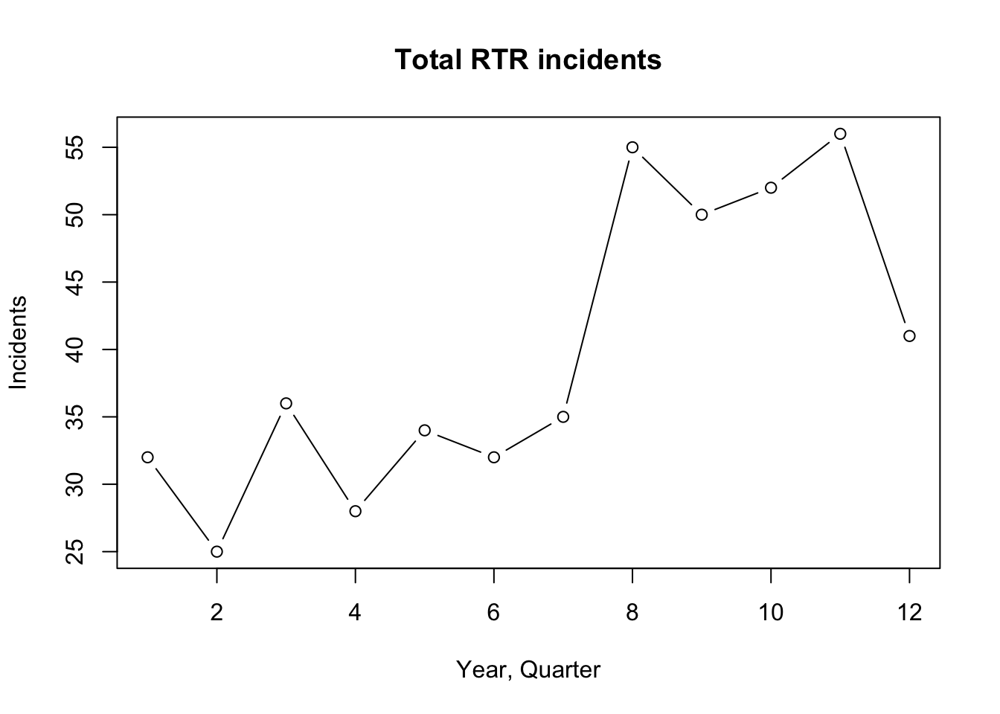
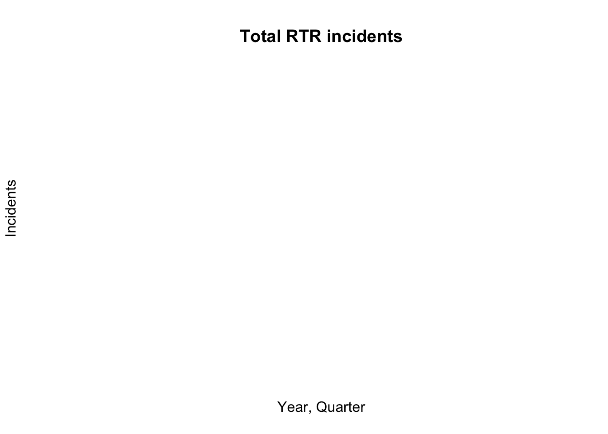
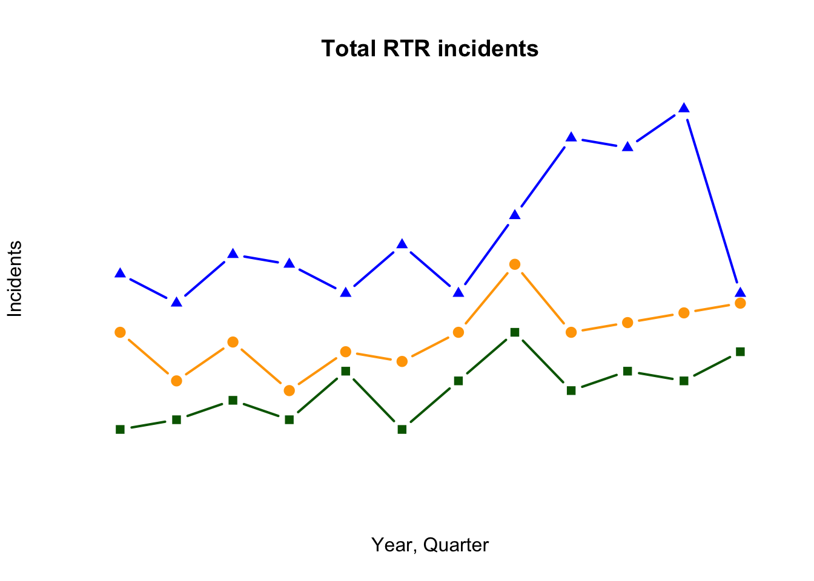
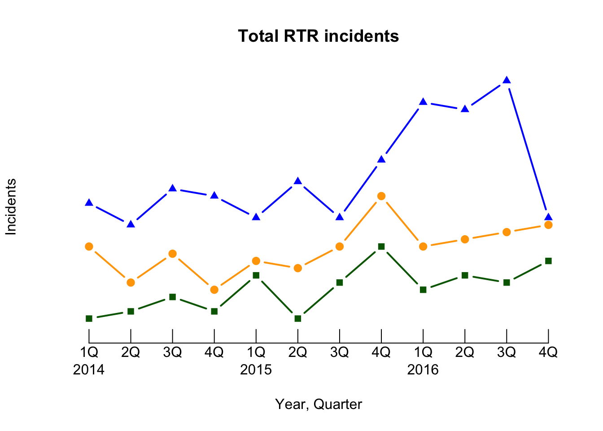
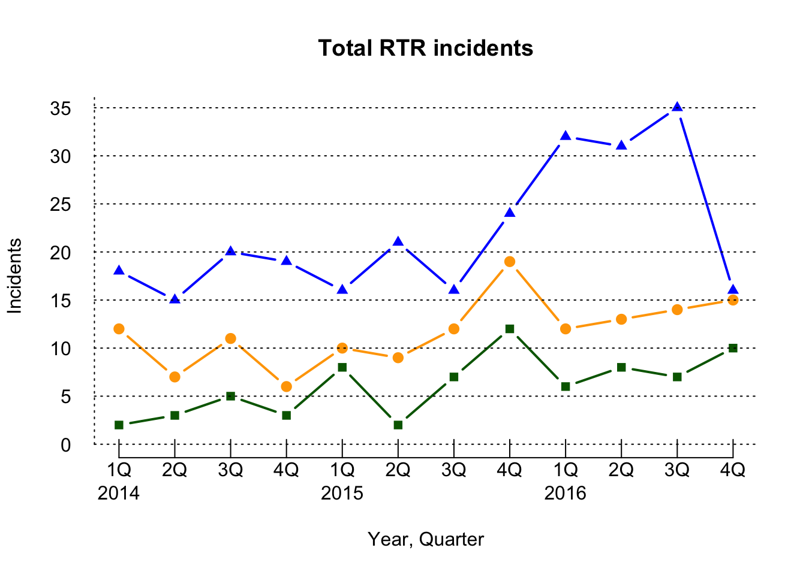
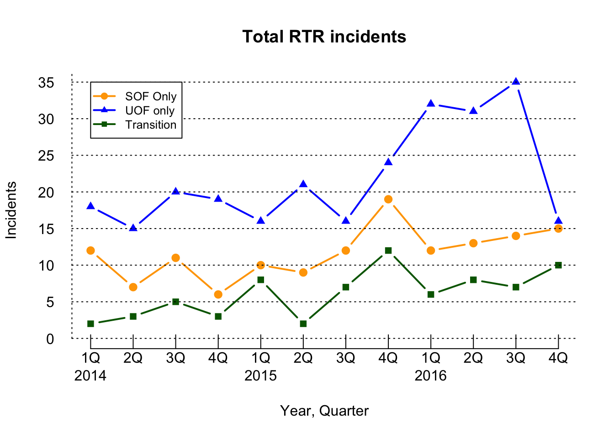

With line charts, we’re going to introduce the idea of creating a space for the plot and then adding elements to it.
You can see why with a basic line plot.
But first we load the readr library and then the dataset.
library(readr)
df <- read_csv("dfCrime.csv")## Parsed with column specification:
## cols(
## Year_Quarter = col_character(),
## year = col_integer(),
## quarter = col_character(),
## Total_CFS = col_integer(),
## Total_arrests = col_integer(),
## Total_RTR = col_integer(),
## SOF_only = col_integer(),
## UOF_only = col_integer(),
## Transitions = col_integer()
## )Now let’s use summary() to remind us of what the data is
summary(df)## Year_Quarter year quarter Total_CFS
## Length:12 Min. :2014 Length:12 Min. :18178
## Class :character 1st Qu.:2014 Class :character 1st Qu.:19663
## Mode :character Median :2015 Mode :character Median :21544
## Mean :2015 Mean :21341
## 3rd Qu.:2016 3rd Qu.:22753
## Max. :2016 Max. :24715
## Total_arrests Total_RTR SOF_only UOF_only
## Min. : 889.0 Min. :25.00 Min. : 6.00 Min. :15.00
## 1st Qu.: 947.8 1st Qu.:32.00 1st Qu.: 9.75 1st Qu.:16.00
## Median : 994.5 Median :35.50 Median :12.00 Median :19.50
## Mean :1013.2 Mean :39.67 Mean :11.67 Mean :21.92
## 3rd Qu.:1046.2 3rd Qu.:50.50 3rd Qu.:13.25 3rd Qu.:25.75
## Max. :1246.0 Max. :56.00 Max. :19.00 Max. :35.00
## Transitions
## Min. : 2.000
## 1st Qu.: 3.000
## Median : 6.500
## Mean : 6.083
## 3rd Qu.: 8.000
## Max. :12.000Three years with four quarters each of response-to-resistance (RTR) incidents from the Elgin police department. That’s broken down by the type of response - show of force only, use of force only and transition - show to use of force.
Now let’s plot total RTR incidents as a line plot
plot(df$Total_RTR, type="b",
xlab = "Year, Quarter",
ylab = "Incidents",
main = "Total RTR incidents")
It’s a pretty simple graphic, but flawed.
plot(df$Total_RTR, plots the Total_RTR column.
type=‘b’ tells plot to make this a line chart with dots at the points. All the other items should be obvious.
But look at the axis at the bottom (x axis)! Instead of the year and quarter, it’s using the row number of the information. plot( doesn’t take the label= command.
The axis on the side - the y axis - isn’t great either. It starts at 25, which makes it look like some of the items are near zero if you don’t look at the scale.
So we’re going to need to do some design work and build the plot from the ground up. And as long as we’re doing that, let’s plot the three categories of RTR as separate lines.
The first thing we need to do is figure out the overall size of the plot, and that means we have to figure out the range of values for the x and y axis. And the command we’ll use to do that is called range
For the x axis, we’ll want to know the number of rows. We want a start number which we can supply and an end number, which we find out using NROW which counts the number of rows in a column.
xrange <- range(1,NROW(df$Year_Quarter))
xrange## [1] 1 12Next for the y axis, we need to figure out the highest value out of all three of the columns we want to plot.
Range takes care of that for us. We just need to supply the starting point (0) and then supply the three columns. Range finds the highest number out of the three.
xrange <- range(1,NROW(df$Year_Quarter))
yrange <- range(0,df$SOF_only,df$UOF_only,df$Transitions)
yrange## [1] 0 35Now we can plot, using the values in xrange and yrange to set the size of the plot area.
xrange <- range(1,NROW(df$Year_Quarter))
yrange <- range(0,df$SOF_only,df$UOF_only,df$Transitions)
plot(xrange, yrange, type="n", axes=FALSE,
xlab = "Year, Quarter", ylab = "Incidents",
main = "Total RTR incidents")
The only things you see are the labels. We told R not to plot with type=‘n’ and set axes to False.
So now we can add each line individualy.
xrange <- range(1,NROW(df$Year_Quarter))
yrange <- range(0,df$SOF_only,df$UOF_only,df$Transitions)
plot(xrange, yrange, type="n", axes=FALSE,
xlab = "Year, Quarter", ylab = "Incidents",
main = "Total RTR incidents")
lines(df$SOF_only,
type = "b",
pch=19,
col = "orange",
lwd=2)
lines(df$UOF_only,
type = "b",
pch=17,
col = "blue",
lwd=2)
lines(df$Transitions,
type = "b",
pch=15,
col = "darkgreen",
lwd=2)
lines( adds a line to the plot, based on values from the column we specify.
type=‘b’ specifies a line with a dot.
pch=19 indicates what type of symbol we want. 19 is a solid circle. Use ?pch to see other symbols.
lwd is line weight. Default is 1, but we made our lines thicker.
Now let’s add the x axis
xrange <- range(1,NROW(df$Year_Quarter))
yrange <- range(0,df$SOF_only,df$UOF_only,df$Transitions)
plot(xrange, yrange, type="n", axes=FALSE,
xlab = "Year, Quarter", ylab = "Incidents",
main = "Total RTR incidents")
lines(df$SOF_only,
type = "b",
pch=19,
col = "orange",
lwd=2)
lines(df$UOF_only,
type = "b",
pch=17,
col = "blue",
lwd=2)
lines(df$Transitions,
type = "b",
pch=15,
col = "darkgreen",
lwd=2)
axis(1, las=1, at=1:xrange[2],
tck = .05,
lab=c("1Q\n2014","2Q\n","3Q\n","4Q\n","1Q\n2015","2Q\n","3Q\n","4Q\n","1Q\n2016","2Q\n","3Q\n","4Q\n") )
We’re getting into design here, but a lot of doing graphics involves design.
axis(1, adds the x axis. For the y, we’ll use 2.
las=1 makes the labels horizontal.
at=1:xrange[2], at= tells it where to put tick marks. We start at the first position and go to the highest number in our xrange. Xrange has only two numbers in it, so ask the second one.
tck = .05, Sets the size of the ticks. In this case, they’re short.
lab=c( Here we got a little fancy. If we tried to put all the labels in, they’d run into each other. But we need something for each of the 12 ticks. So we label the first tick 1Q then a line break slash “N” then the year 2014. For 2Q-4Q, it’s just the quarter then the line break so the label is flush with the line.
Now let’s add the y axis
xrange <- range(1,NROW(df$Year_Quarter))
yrange <- range(0,df$SOF_only,df$UOF_only,df$Transitions)
plot(xrange, yrange, type="n", axes=FALSE,
xlab = "Year, Quarter", ylab = "Incidents",
main = "Total RTR incidents")
lines(df$SOF_only,
type = "b",
pch=19,
col = "orange",
lwd=2)
lines(df$UOF_only,
type = "b",
pch=17,
col = "blue",
lwd=2)
lines(df$Transitions,
type = "b",
pch=15,
col = "darkgreen",
lwd=2)
axis(1, las=1, at=1:xrange[2],
tck = .05,
lab=c("1Q\n2014","2Q\n","3Q\n","4Q\n","1Q\n2015","2Q\n","3Q\n","4Q\n","1Q\n2016","2Q\n","3Q\n","4Q\n") )
axis(2, las=1, at=5*0:yrange[2], tck = 1, lty=3)
axis(2 sets up the y axis, las=1 makes sure the text labels are horizontal.
at+5*0:yrange[2] starts the ticks at 0 and counts them by 5 to the top of the yrange[2]
tck=1 has the line go all the way across
lty is the line type, in this case dots.
Finally, let’s add a legend
xrange <- range(1,NROW(df$Year_Quarter))
yrange <- range(0,df$SOF_only,df$UOF_only,df$Transitions)
plot(xrange, yrange, type="n", axes=FALSE,
xlab = "Year, Quarter", ylab = "Incidents",
main = "Total RTR incidents")
lines(df$SOF_only,
type = "b",
pch=19,
col = "orange",
lwd=2)
lines(df$UOF_only,
type = "b",
pch=17,
col = "blue",
lwd=2)
lines(df$Transitions,
type = "b",
pch=15,
col = "darkgreen",
lwd=2)
axis(1, las=1, at=1:xrange[2],
tck = .05,
lab=c("1Q\n2014","2Q\n","3Q\n","4Q\n","1Q\n2015","2Q\n","3Q\n","4Q\n","1Q\n2016","2Q\n","3Q\n","4Q\n") )
axis(2, las=1, at=5*0:yrange[2], tck = 1, lty=3)
legend(1, yrange[2],
c("SOF Only", "UOF only", "Transition"),
cex=0.8,
col=c("Orange","blue","darkgreen"),
pch=c(19,17,15), lwd=2)
Now we have the complete plot.
legend(1,yrange[2] legend is the command, 1 is the x position, yrange[2] is the y postion. So top left.
The next commands should be understandable.
Basic plots are OK, but we had to go to some lengths to get a decent looking line chart. When we start working with ggplot2, it should be a lot easier.